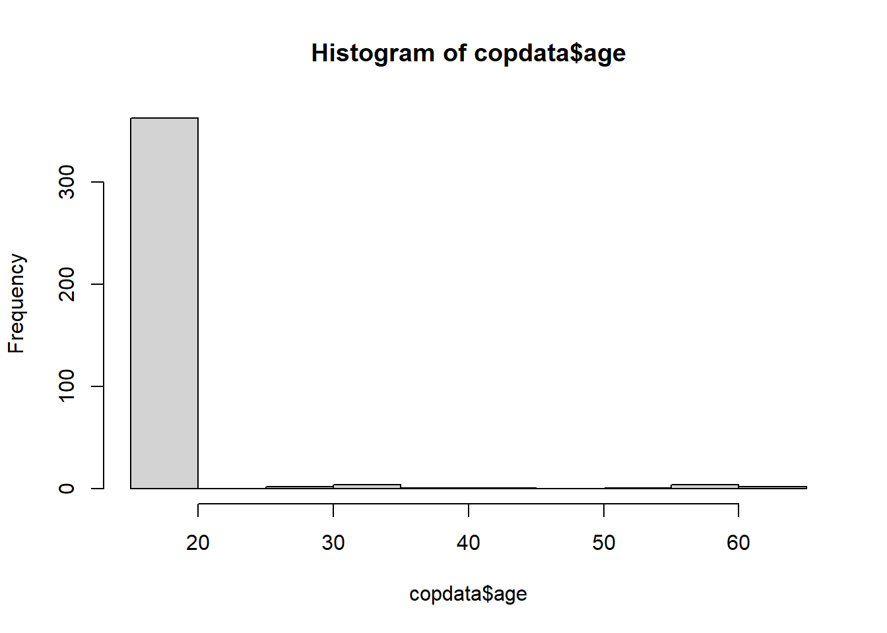
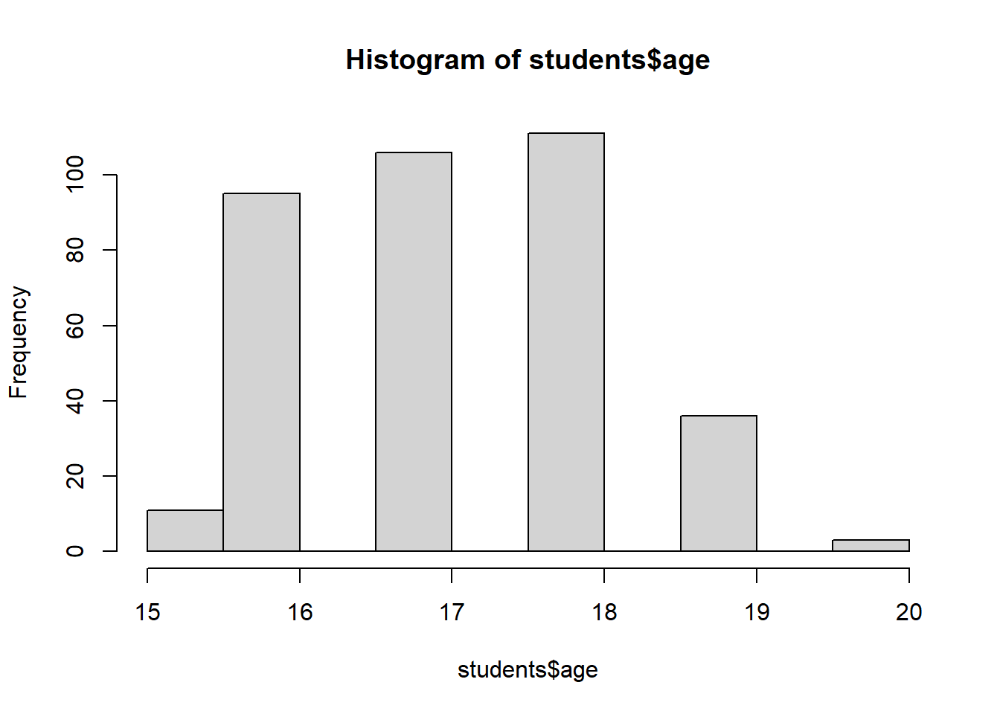

At the end of the session, participants will be able to:
Perform hypothesis tests.
Estimate risk ratios (also called relative risk) for categorical data.
Interpret the univariable results.
(Optional) Investigate dose-response relationships in categorical data.
2. Story/plot description
You have just estimated risk ratios (RR) of individual food items manually to better understand the concept. RR give you an idea of which food items could be the culprit(s) of the outbreak.
Now, you will practice performing hypothesis testing and calculating RR in R to investigate the associations of suspicious food items with the disease.
Note that, although this is not an exhaustive list of tests, the following can be useful for this exercise (relevant for comparisons between two groups):
For continuous variables:
shapiro.test() (for checking if normally distributed)
t.test() (for normal distributions)
wilcox.test() (for non-parametric testing. Used to determine if two numeric samples are from the same distribution, when their populations are not normally distributed or have unequal variance.)
For categorical variables:
chisq.test() (if all comparisons include at least 5 cases)
fisher.test() (if there are < 5 cases for any comparison)
3. Questions/Assignments
3.1. Install packages and load libraries
Show the code
# Load the required libraries into the current R session:pacman::p_load(rio, here, tidyverse, skimr, plyr, janitor, lubridate, gtsummary, flextable, officer, epikit, apyramid, scales, EpiStats, broom)
3.2. Import your data
Show the code
# Import the raw data set:copdata <- rio::import(here::here("data", "Spetses_clean2_2024.rds"), trust = T)
3.3. Hypothesis tests for other variables
Check if the following variables are associated with being a case: age, sex, class and group.
a) age
With the Shapiro-Wilk test we check if the variables are following the normal distribution. The null hypothesis is that the data follow a normal distribution, therefore, rejecting the null hypothesis means that the data do not follow the normal distribution. A p-value below the cutoff for rejecting the null hypothesis, e.g., a p-value<0.05 means that we reject the null hypothesis that the data follow the normal distribution. For age, the p-value is <0.05, therefore we reject the null hypothesis that the data are normally distributed. As we see in the graph most frequently reported age is <20 years.
Show the code
# Check if age overall follows a normal distribution:shapiro.test(copdata$age)
Shapiro-Wilk normality test
data: copdata$age
W = 0.31302, p-value < 2.2e-16
Show the code
# Can simply have a look athist(copdata$age)

Show the code
# Looking only at the students:students <- copdata %>%filter(group =="student")hist(students$age)

Age overall (nor within the students’ group) is not normally distributed.
We compare the age for cases and non-cases using the Wilcoxon test that is used when the data are not normally distributed. The null hypothesis is that there is no difference in the age between the two groups compared. Given that p-value>0.05 we do not reject the null hypothesis.
Show the code
# Perform Wilcoxon rank sum test on age and sex:wilcox.test(age ~ case, data = copdata)
Wilcoxon rank sum test with continuity correction
data: age by case
W = 15934, p-value = 0.1512
alternative hypothesis: true location shift is not equal to 0
What do these results tell you - is there an association between sex and being a case?
Do these results differ from what you expected when looking at the descriptive figures (case proportions stratified by sex, or the age sex pyramid)? If so, why do you think this is?
In this case you have a 2x3 contingency table of class against disease status, we can use a chi-square here. P-value of the association between class and age is p-val = 0.09, suggesting that there is an association at the p-val = 0.20 level among at least one of the 3 different classes. Fellows may want to investigate this further, but in the remaining of the study this is not explored further.
A hypothesis could be that one of the classes sat together and, for whatever reason, they ate more of the contaminated food item at those tables. This could be further studied if we had the spatial distribution of where the people sat at the dinner. Another hypothesis is that one of the classes differ from other classes in some characteristics that made them more susceptible or more exposed to the infected food item.
P-value of the association between group and age is p-val = 0.2, suggesting that there may be an association at the p-val = 0.20 level. Explanations are like above, with variable class.
The risk ratios of each food item (including the 2x2 table) are reported below. The output of the CS() command is two tables: one with the 2x2 table and one with the risk difference, the risk ratio and the attributable fraction among exposed as well as the attributable fraction among the population (and the confidence intervals for all the estimates). The Chi-square and the p-value are also reported. In the second part, a table with all the food items is printed including attack rates for exposed and unexposed as well as risk ratios and the 95% confidence intervals (CI ll and CI ul, for the lower and upper interval) and p-values.
a) Calculate 95% CI Risk Ratios for food
To see if food items (note these are categorical variables) are associated with being a case, calculate risk ratios and 95% confidence intervals for food items. You can calculate this individually for each food item (using CSTable()), or all at once (see hint below).
Need a little bit of help?
Create a food_vars vector containing food variables of interest and use the function CSTable() of the EpiStats package.
Using this hint, you will create a table with the name of exposure variables, the total number of exposed, the number of exposed cases, the attack rate among the exposed, the total number of unexposed, the number of unexposed cases, the attack rate among the unexposed, risk ratios, 95% percent confidence intervals, and p-values. Amazing, isn’t it? Have a look at ??CSTable to learn more.
Show the code
# You could use the EpiStats package for each food itemCS(copdata, "case", "feta")
$df1
Cases Non Cases Total Risk
Exposed 156 115 271 0.58
Unexposed 60 42 102 0.59
Total 216 157 373 0.58
$df2
Point estimate 95%CI.ll 95%CI.ul
Risk difference -0.01 -0.12 0.10
Risk ratio 0.98 0.81 1.19
Prev. frac. ex. 0.02 -0.19 0.19
Prev. frac. pop 0.02 NA NA
chi2(1) 0.05 NA NA
Pr>chi2 0.826 NA NA
Show the code
CS(copdata, "case", "sardines")
$df1
Cases Non Cases Total Risk
Exposed 150 105 255 0.59
Unexposed 65 52 117 0.56
Total 215 157 372 0.58
$df2
Point estimate 95%CI.ll 95%CI.ul
Risk difference 0.03 -0.08 0.14
Risk ratio 1.06 0.87 1.28
Attr. frac. ex. 0.06 -0.14 0.22
Attr. frac. pop 0.04 NA NA
chi2(1) 0.35 NA NA
Pr>chi2 0.553 NA NA
Show the code
CS(copdata, "case", "eggplant")
$df1
Cases Non Cases Total Risk
Exposed 123 93 216 0.57
Unexposed 83 60 143 0.58
Total 206 153 359 0.57
$df2
Point estimate 95%CI.ll 95%CI.ul
Risk difference -0.01 -0.12 0.09
Risk ratio 0.98 0.82 1.18
Prev. frac. ex. 0.02 -0.18 0.18
Prev. frac. pop 0.01 NA NA
chi2(1) 0.04 NA NA
Pr>chi2 0.837 NA NA
Show the code
CS(copdata, "case", "pasta")
$df1
Cases Non Cases Total Risk
Exposed 202 136 338 0.60
Unexposed 13 23 36 0.36
Total 215 159 374 0.57
$df2
Point estimate 95%CI.ll 95%CI.ul
Risk difference 0.24 0.07 0.40
Risk ratio 1.65 1.06 2.58
Attr. frac. ex. 0.40 0.06 0.61
Attr. frac. pop 0.37 NA NA
chi2(1) 7.45 NA NA
Pr>chi2 0.006 NA NA
Show the code
# You can save time (and probably typos!) by creating a vector for food variables...food_vars <-c("feta", "sardines", "eggplant", "pasta", "veal", "tomsal", "dessert", "bread", "champagne", "beer", "redwine", "whitewine")# ...and using EpiStats::CSTable() to run all variables together!CSTable(copdata, "case", food_vars)
· Considering the relative risks, which food or drink items do you think were most likely to be the vehicle(s) of infection in this outbreak?
· Do you think there are any confounders or effect modifiers? If so, how would you investigate these further?
The interesting results here are that the food items that are most suspicious are pasta,veal and champagne. Pasta as such is unlikely to be contaminated, but as you can see in the picture (and from the dinner night), it was served with pesto! Maybe it was the pesto? Who-ho-ho!
Before one jumps into conclusions, consider that this result could be due to confounding! Maybe pasta was “clean” but eaten by all the people who ate the food item that actually was contaminated!(Optional)
3.5. (Optional) Dose Response
Check for a dose-response relationship between the food items with the highest RR values (the top 3) and being a case.
$data
Outcome
Predictor 0 1 Total
0 23 13 36
1 32 38 70
2 76 107 183
3 28 57 85
Total 159 215 374
$measure
risk ratio with 95% C.I.
Predictor estimate lower upper
0 1.000000 NA NA
1 1.503297 0.9257878 2.441057
2 1.619168 1.0310538 2.542742
3 1.857014 1.1730804 2.939696
$p.value
two-sided
Predictor midp.exact fisher.exact chi.square
0 NA NA NA
1 0.081364161 0.100893180 0.07613202
2 0.015337953 0.017069765 0.01373981
3 0.002010616 0.002370887 0.00162311
$correction
[1] FALSE
attr(,"method")
[1] "Unconditional MLE & normal approximation (Wald) CI"
Using a binomial regression:
Show the code
# Let's get the results directly exponentiatedbinom_pastaD_exp <-glm(case ~ pastaD, data = copdata, family =binomial(link ="log")) %>%tidy(exponentiate =TRUE, conf.int =TRUE)binom_pastaD_exp
Let’s stop and… think!
What do these results tell you?
Results suggest a dose response relationship of having eaten pasta, pointing towards pasta as the potential vehicle. The higher the amount of pasta they ate, the stronger is the association (RR) with getting ill/being a case.
$data
Outcome
Predictor 0 1 Total
0 19 15 34
1 30 40 70
2 78 106 184
3 33 54 87
Total 160 215 375
$measure
risk ratio with 95% C.I.
Predictor estimate lower upper
0 1.000000 NA NA
1 1.295238 0.8431805 1.989659
2 1.305797 0.8769752 1.944304
3 1.406897 0.9314233 2.125090
$p.value
two-sided
Predictor midp.exact fisher.exact chi.square
0 NA NA NA
1 0.22186384 0.2951163 0.21193013
2 0.15357032 0.1884220 0.14587265
3 0.07956697 0.1017336 0.07298506
$correction
[1] FALSE
attr(,"method")
[1] "Unconditional MLE & normal approximation (Wald) CI"
Using a binomial regression:
Show the code
# Binomial regression for RRs. # The outcome needs to be exponentiated so we can interpret it properly!binom_vealD <-glm(case ~ vealD, data = copdata, family =binomial(link ="log"))# To get exponentiated:binom_vealD_exp <-glm(case ~ vealD, data = copdata, family =binomial(link ="log")) %>%tidy(exponentiate =TRUE, conf.int =TRUE)binom_vealD_exp
$data
Outcome
Predictor 0 1 Total
0 27 21 48
1 93 111 204
2 12 32 44
3 24 44 68
Total 156 208 364
$measure
risk ratio with 95% C.I.
Predictor estimate lower upper
0 1.000000 NA NA
1 1.243697 0.8812613 1.755193
2 1.662338 1.1502014 2.402507
3 1.478992 1.0260296 2.131923
$p.value
two-sided
Predictor midp.exact fisher.exact chi.square
0 NA NA NA
1 0.188922591 0.201367850 0.183280359
2 0.005584928 0.006247816 0.004961941
3 0.027627736 0.036334120 0.025117641
$correction
[1] FALSE
attr(,"method")
[1] "Unconditional MLE & normal approximation (Wald) CI"
Using a binomial regression:
Show the code
# Let's get the results directly exponentiatedbinom_champagneD_exp <-glm(case ~ champagneD, data = copdata, family =binomial(link ="log")) %>%tidy(exponentiate =TRUE, conf.int =TRUE)binom_champagneD_exp
3.6 Summary
As a summary of what you’ve done above, answer these questions:
Is the respondents’ sex associated with being a case?
Is the school class associated with being a case?
Which foods increase the risk of being a case?
(Optional) Is there a dose-response relationship between the food items and being a case?
What do you think is the most likely culprit(s) of this outbreak at this point? Are there any risk factors you would like to highlight?
Source Code
---title: "Univariable analysis"editor: visual---## 1. Learning outcomesAt the end of the session, participants will be able to:- Perform hypothesis tests.- Estimate risk ratios (also called relative risk) for categorical data.- Interpret the univariable results.- (Optional) Investigate dose-response relationships in categorical data.## 2. Story/plot descriptionYou have just estimated risk ratios (RR) of individual food items manually to better understand the concept. RR give you an idea of which food items could be the culprit(s) of the outbreak.Now, you will practice performing hypothesis testing and calculating RR in R to investigate the associations of suspicious food items with the disease.Note that, although this is not an exhaustive list of tests, the following can be useful for this exercise (relevant for comparisons between two groups):- **For continuous variables:** - `shapiro.test()` (for checking if normally distributed) - `t.test()` (for normal distributions) - `wilcox.test()` (for non-parametric testing. Used to determine if two numeric samples are from the same distribution, when their populations are not normally distributed or have unequal variance.)- **For categorical variables:** - `chisq.test()` (if all comparisons include at least 5 cases) - `fisher.test()` (if there are \< 5 cases for any comparison)## 3. Questions/Assignments## 3.1. Install packages and load libraries```{r}# Load the required libraries into the current R session:pacman::p_load(rio, here, tidyverse, skimr, plyr, janitor, lubridate, gtsummary, flextable, officer, epikit, apyramid, scales, EpiStats, broom)```## 3.2. Import your data```{r, Import_data}# Import the raw data set:copdata <- rio::import(here::here("data", "Spetses_clean2_2024.rds"), trust = T)```## 3.3. Hypothesis tests for other variablesCheck if the following variables are associated with being a case: age, sex, class and group.#### a) ageWith the Shapiro-Wilk test we check if the variables are following the normal distribution. The null hypothesis is that the data follow a normal distribution, therefore, rejecting the null hypothesis means that the data do not follow the normal distribution. A p-value below the cutoff for rejecting the null hypothesis, e.g., a p-value\<0.05 means that we reject the null hypothesis that the data follow the normal distribution. For age, the p-value is \<0.05, therefore we reject the null hypothesis that the data are normally distributed. As we see in the graph most frequently reported age is \<20 years.```{r}# Check if age overall follows a normal distribution:shapiro.test(copdata$age)# Can simply have a look athist(copdata$age)# Looking only at the students:students <- copdata %>%filter(group =="student")hist(students$age)```Age overall (nor within the students' group) is not normally distributed.We compare the age for cases and non-cases using the Wilcoxon test that is used when the data are not normally distributed. The null hypothesis is that there is no difference in the age between the two groups compared. Given that p-value\>0.05 we do not reject the null hypothesis.```{r}# Perform Wilcoxon rank sum test on age and sex:wilcox.test(age ~ case, data = copdata)```#### b) sex```{r}copdata %>%select(sex, case) %>%tbl_summary(by = case) %>%add_p()```::: {.callout-warning title="Let's stop and... think!" collapse="true"}What do these results tell you - is there an association between sex and being a case?Do these results differ from what you expected when looking at the descriptive figures (case proportions stratified by sex, or the age sex pyramid)? If so, why do you think this is?:::#### c) class```{r}copdata %>%select(class, case) %>%tbl_summary(by = case) %>%add_p()```In this case you have a 2x3 contingency table of class against disease status, we can use a chi-square here. P-value of the association between class and age is p-val = 0.09, suggesting that there is an association at the p-val = 0.20 level among at least one of the 3 different classes. Fellows may want to investigate this further, but in the remaining of the study this is not explored further.A hypothesis could be that one of the classes sat together and, for whatever reason, they ate more of the contaminated food item at those tables. This could be further studied if we had the spatial distribution of where the people sat at the dinner. Another hypothesis is that one of the classes differ from other classes in some characteristics that made them more susceptible or more exposed to the infected food item.#### d) group```{r}copdata %>%select(group, case) %>%tbl_summary(by = case) %>%add_p()```P-value of the association between group and age is p-val = 0.2, suggesting that there may be an association at the p-val = 0.20 level. Explanations are like above, with variable class.#### Let's do all together```{r}copdata %>%select(sex, class, group, case) %>%tbl_summary(by = case) %>%add_p()```## 3.4. Risk RatiosThe risk ratios of each food item (including the 2x2 table) are reported below. The output of the `CS()` command is two tables: one with the 2x2 table and one with the risk difference, the risk ratio and the attributable fraction among exposed as well as the attributable fraction among the population (and the confidence intervals for all the estimates). The Chi-square and the p-value are also reported. In the second part, a table with all the food items is printed including attack rates for exposed and unexposed as well as risk ratios and the 95% confidence intervals (CI ll and CI ul, for the lower and upper interval) and p-values.### a) Calculate 95% CI Risk Ratios for foodTo see if food items (note these are categorical variables) are associated with being a case, calculate risk ratios and 95% confidence intervals for food items. You can calculate this individually for each food item (using `CSTable()`), or all at once (see hint below).::: {.callout-tip title="Need a little bit of help?" collapse="true"}Create a `food_vars` vector containing food variables of interest and use the function `CSTable()` of the EpiStats package.*Using this hint, you will create a table with the name of exposure variables, the total number of exposed, the number of exposed cases, the attack rate among the exposed, the total number of unexposed, the number of unexposed cases, the attack rate among the unexposed, risk ratios, 95% percent confidence intervals, and p-values. Amazing, isn't it? Have a look at `??CSTable` to learn more.*:::```{r}# You could use the EpiStats package for each food itemCS(copdata, "case", "feta")CS(copdata, "case", "sardines")CS(copdata, "case", "eggplant")CS(copdata, "case", "pasta")``````{r}# You can save time (and probably typos!) by creating a vector for food variables...food_vars <-c("feta", "sardines", "eggplant", "pasta", "veal", "tomsal", "dessert", "bread", "champagne", "beer", "redwine", "whitewine")# ...and using EpiStats::CSTable() to run all variables together!CSTable(copdata, "case", food_vars)```### b) Prepare the RR table for publication::: {.callout-tip title="Need a little bit of help?" collapse="true"}Use `flextable()` and `set_header_labels()`.:::```{r}rr_tbl <-CSTable(copdata, "case", food_vars) %>%as.data.frame() %>%rownames_to_column() %>%flextable() %>%set_header_labels(values =c("Food Item","Total exposed", "Cases exposed", "AR among exposed", "Total unexposed","Cases unexposed","AR among unexposed","RR", "95% lower CI", "95% upper CI","p-value"))```::: {.callout-warning title="Let's stop and... think!" collapse="true"}· What can you infer from this table?· Considering the relative risks, which food or drink items do you think were most likely to be the vehicle(s) of infection in this outbreak?· Do you think there are any confounders or effect modifiers? If so, how would you investigate these further?:::The interesting results here are that the food items that are most suspicious are pasta,veal and champagne. Pasta as such is unlikely to be contaminated, but as you can see in the picture (and from the dinner night), it was served with pesto! Maybe it was the pesto? Who-ho-ho!Before one jumps into conclusions, consider that this result could be due to confounding! Maybe pasta was "clean" but eaten by all the people who ate the food item that actually was contaminated!(Optional)## 3.5. (Optional) Dose ResponseCheck for a dose-response relationship between the food items with the highest RR values (the top 3) and being a case.#### a) PastaUsing `epitools::riskratio` function:```{r}epitools::riskratio(copdata$pastaD, copdata$case, conf.level =0.95)```Using a binomial regression:```{r}# Let's get the results directly exponentiatedbinom_pastaD_exp <-glm(case ~ pastaD, data = copdata, family =binomial(link ="log")) %>%tidy(exponentiate =TRUE, conf.int =TRUE)binom_pastaD_exp```::: {.callout-warning title="Let's stop and... think!" collapse="true"}What do these results tell you?:::Results suggest a dose response relationship of having eaten pasta, pointing towards pasta as the potential vehicle. The higher the amount of pasta they ate, the stronger is the association (RR) with getting ill/being a case.#### b) VealUsing `epitools::riskratio` function:```{r}epitools::riskratio(copdata$vealD, copdata$case,conf.level =0.95)```Using a binomial regression:```{r}# Binomial regression for RRs. # The outcome needs to be exponentiated so we can interpret it properly!binom_vealD <-glm(case ~ vealD, data = copdata, family =binomial(link ="log"))# To get exponentiated:binom_vealD_exp <-glm(case ~ vealD, data = copdata, family =binomial(link ="log")) %>%tidy(exponentiate =TRUE, conf.int =TRUE)binom_vealD_exp```#### c) ChampagneUsing `epitools::riskratio` function:```{r}epitools::riskratio(copdata$champagneD, copdata$case, conf.level =0.95)```Using a binomial regression:```{r}# Let's get the results directly exponentiatedbinom_champagneD_exp <-glm(case ~ champagneD, data = copdata, family =binomial(link ="log")) %>%tidy(exponentiate =TRUE, conf.int =TRUE)binom_champagneD_exp```## 3.6 SummaryAs a summary of what you've done above, answer these questions:- Is the respondents' sex associated with being a case?- Is the school class associated with being a case?- Which foods increase the risk of being a case?- (Optional) Is there a dose-response relationship between the food items and being a case?- What do you think is the most likely culprit(s) of this outbreak at this point? Are there any risk factors you would like to highlight?